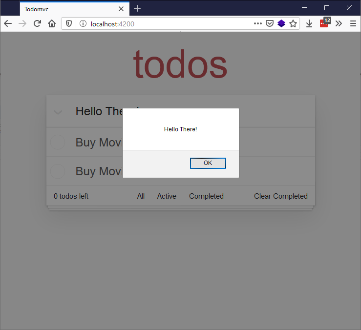
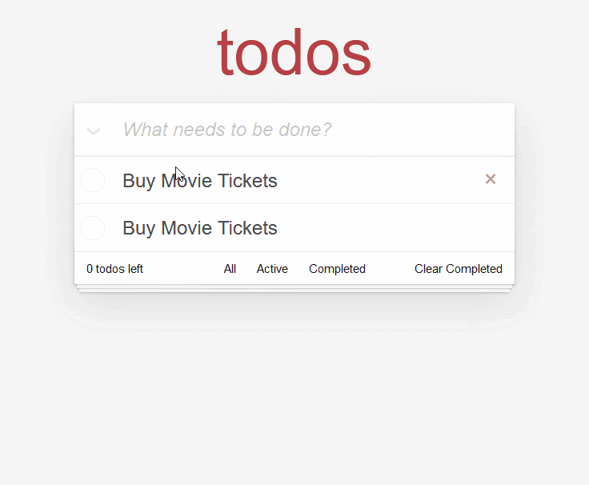
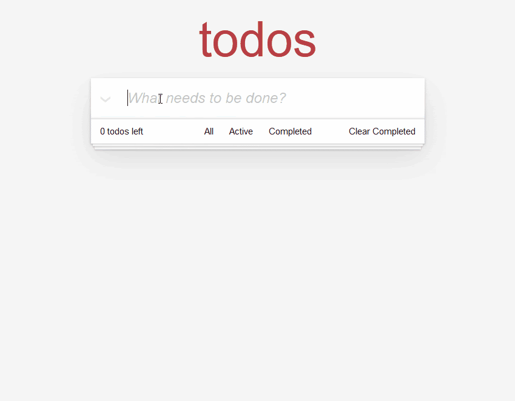

At this point we'll start adding some interactivity to our app, providing the ability to add and display new todo items. Along the way, we'll look at using events in Ember, creating component classes to contain JavaScript code to control interactive features, and setting up a service to keep track of the data state of our app.
| Prerequisites: |
At minimum, it is recommended that you are familiar with the core HTML, CSS, and JavaScript languages, and have knowledge of the terminal/command line. A deeper understanding of modern JavaScript features (such as classes, modules, etc), will be extremely beneficial, as Ember makes heavy use of them. |
|---|---|
| Objective: | To learn how to create component classes and use events to control interactivity, and keep track of app state using a service. |
Now we've got a refactored componentized version of our todo app, lets walk through how we can add the interactivity we need to make the app functional.
When beginning to think about interactivity, it's good to declare what each component's goals and responsibilities are. In the below sections we’ll do this for each component, and then walk you through how the functionality can be implemented.
For our card-header / todo input, we'll want to be able to submit our typed in todo task when we press the Enter key and have it appear in the todos list.
We want to be able to capture the text typed into the input. We do this so that our JavaScript code knows what we typed in, and we can save our todo and pass that text along to the todo list component to display.
We can capture the keydown event via the on modifier, which is just Ember syntactic sugar around addEventListener and removeEventListener (see this explanation if needed).
Add the new line shown below to your header.hbs file:
<input
class='new-todo'
aria-label='What needs to be done?'
placeholder='What needs to be done?'
autofocus
\{{on 'keydown' this.onKeyDown}}
>
This new attribute is inside double curly braces, which tells you it is part of Ember's dynamic templating syntax. The first argument passed to on is the type of event to respond to (keydown), and the last argument is the event handler — the code that will run in response to the keydown event firing. As you may expect from dealing with vanilla JavaScript objects, the this keyword refers to the "context" or "scope" of the component. One component's this will be different from another component's this.
We can define what is available inside this by generating a component class to go along with your component. This is a vanilla JavaScript class and has no special meaning to Ember, other than extending from the Component super-class.
To create a header class to go with your header component, type this in to your terminal:
ember generate component-class header
This will create the following empty class file — todomvc/app/components/header.js:
import Component from '@glimmer/component';
export default class HeaderComponent extends Component {
}
Inside this file we will implement the event handler code. Update the content to the following:
import Component from '@glimmer/component';
import { action } from '@ember/object';
export default class HeaderComponent extends Component {
@action
onKeyDown({ target, key }) {
let text = target.value.trim();
let hasValue = Boolean(text);
if (key === 'Enter' && hasValue) {
alert(text);
target.value = ''
}
}
}
The @action decorator is the only Ember-specific code here (aside from extending from the Component superclass, and the Ember-specific items we are importing using JavaScript module syntax) — the rest of the file is vanilla JavaScript, and would work in any application. The @action decorator declares that the function is an "action", meaning it's a type of function that will be invoked from an event that occurred in the template. @action also binds the this of the function to the class instance.
Note: A decorator is basically a wrapper function, which wraps and calls other functions or properties, providing additional functionality along the way. For example, the @tracked decorator (see slightly later on) runs code it is applied to, but additionally tracks it and automatically updates the app when values change. Read JavaScript Decorators: What They Are and When to Use Them for more general information on decorators.
Coming back to our browser tab with the app running, we can type whatever we want, and when we hit Enter we'll be greeted with an alert message telling us exactly what we typed.

With the interactivity of the header input out of the way, we need a place to store todos so that other components can access them.
Ember has built-in application-level state management that we can use to manage the storage of our todos and allow each of our components to access data from that application-level state. Ember calls these constructs Services, and they live for the entire lifetime of the page (a page refresh will clear them; persisting the data for longer is beyond the scope of this tutorial).
Run this terminal command to generate a service for us to store our todo-list data in:
ember generate service todo-data
This should give you a terminal output like so:
installing service create app/services/todo-data.js installing service-test create tests/unit/services/todo-data-test.js
This creates a todo-data.js file inside the todomvc/app/services directory to contain our service, which initially contains an import statement and an empty class:
import Service from '@ember/service';
export default class TodoDataService extends Service {
}
First of all, we want to define what a todo is. We know that we want to track both the text of a todo, and whether or not it is completed.
Add the following import statement below the existing one:
import { tracked } from '@glimmer/tracking';
Now add the following class below the previous line you added:
class Todo {
@tracked text = '';
@tracked isCompleted = false;
constructor(text) {
this.text = text;
}
}
This class represents a todo — it contains a @tracked text property containing the text of the todo, and a @tracked isCompleted property that specifies whether the todo has been completed or not. When instantiated, a Todo object will have an initial text value equal to the text given to it when created (see below), and an isCompleted value of false. The only Ember-specific part of this class is the @tracked decorator — this hooks in to the reactivity system and allows Ember to update what you're seeing in your app automatically if the tracked properties change. More information on tracked can be found here.
Now it's time to add to the body of the service.
First add another import statement below the previous one, to make actions available inside the service:
import { action } from '@ember/object';
Update the existing export default class TodoDataService extends Service { … } block as follows:
export default class TodoDataService extends Service {
@tracked todos = [];
@action
add(text) {
let newTodo = new Todo(text);
this.todos = [...this.todos, newTodo];
}
}
Here, the todos property on the service will maintain our list of todos contained inside an array, and we'll mark it with @tracked, because when the value of todos is updated we want the UI to update as well.
And just like before, the add() function that will be called from the template gets annotated with the @action decorator to bind it to the class instance. This function's contents are fairly easy to understand — when the function is invoked, a new Todo object instance is created with a text value of text, and the todos property value is updated to all of the current items inside the array (accessed conveniently using spread syntax), plus the new todo.
Now that we've defined a way to add todos, we can interact with this service from the header.js input component to actually start adding them.
First of all, the service needs to be injected into the template via the @inject decorator, which we’ll rename to @service for semantic clarity. To do this, add the following import line to header.js, beneath the two existing import lines:
import { inject as service } from '@ember/service';
With this import in place, we can now make the todo-data service available inside the HeaderComponent class via the todos object, using the @service decorator. Add the following line just below the opening export... line:
@service('todo-data') todos;
Now the placeholder alert(text); line can be replaced with a call to our new add() function. Replace it with the following:
this.todos.add(text);
If we try this out in the todo app in our browser (npm start, go to localhost:4200), it will look like nothing happens after hitting the Enter key (although the fact that the app builds without any errors is a good sign). Using the Ember Inspector however, we can see that our todo was added:

Now that we know that we can create todos, there needs to be a way to swap out our static "Buy Movie Tickets" todos with the todos we're actually creating. In the TodoList component, we'll want to get the todos out of the service, and render a Todo component for each todo.
In order to retrieve the todos from the service, our TodoList component first needs a backing component class to contain this functionality. Press Ctrl + C to stop the development server, and enter the following terminal command:
ember generate component-class todo-list
This generates the new component class todomvc/app/components/todo-list.js.
Populate this file with the following code, which exposes the todo-data service, via the todos property, to our template. This makes it accessible via this.todos inside both the class and the template:
import Component from '@glimmer/component';
import { inject as service } from '@ember/service';
export default class TodoListComponent extends Component {
@service('todo-data') todos;
}
One issue here is that our service is called todos, but the list of todos is also called todos, so currently we would access the data using this.todos.todos. This is not intuitive, so we'll add a getter to the todos service called all, which will represent all todos.
To do this, go back to your todo-data.js file and add the following below the @tracked todos = []; line:
get all() {
return this.todos;
}
Now we can access the data using this.todos.all, which is much more intuitive. To put this in action, go to your todo-list.hbs component, and replace the static component calls:
<Todo /> <Todo />
With a dynamic #each block (which is basically syntactic sugar over the top of JavaScript's forEach()) that creates a <Todo /> component for each todo available in the list of todos returned by the service’s all() getter:
\{{#each this.todos.all as |todo|}}
<Todo @todo=\{{todo}} />
\{{/each}}
Another way to look at this:
this — the rendering context / component instance.todos — a property on this, which we defined in the todo-list.js component using @service('todo-data') todos;. This is a reference to the todo-data service, allowing us to interact with the service instance directly.all — a getter on the todo-data service that returns all the todos.Try starting the server again and navigating to our app, and you'll find that it works! Well, sort of. Whenever you enter a new Todo item, a new list item appears below the text input, but unfortunately it always says "Buy Movie Tickets".
This is because the text label inside each list item is hardcoded to that text, as seen in todo.hbs:
<label>Buy Movie Tickets</label>
Update this line to use the Argument @todo — which will represent the Todo that we passed in to this component when it was invoked in todo-list.hbs, in the line <Todo @todo=\{{todo}} />:
<label>\{{@todo.text}}</label>
OK, try it again. You should find that now the text submitted in the <input> is properly reflected in the UI:

OK, so that's great progress for now. We can now add todo items to our app, and the state of the data is tracked using our service. Next we'll move on to getting our footer functionality working, including the todo counter, and look at conditional rendering, including correctly styling todos when they've been checked. We'll also wire up our "Clear completed" button.
{{PreviousMenuNext("Learn/Tools_and_testing/Client-side_JavaScript_frameworks/Ember_structure_componentization","Learn/Tools_and_testing/Client-side_JavaScript_frameworks/Ember_conditional_footer", "Learn/Tools_and_testing/Client-side_JavaScript_frameworks")}}